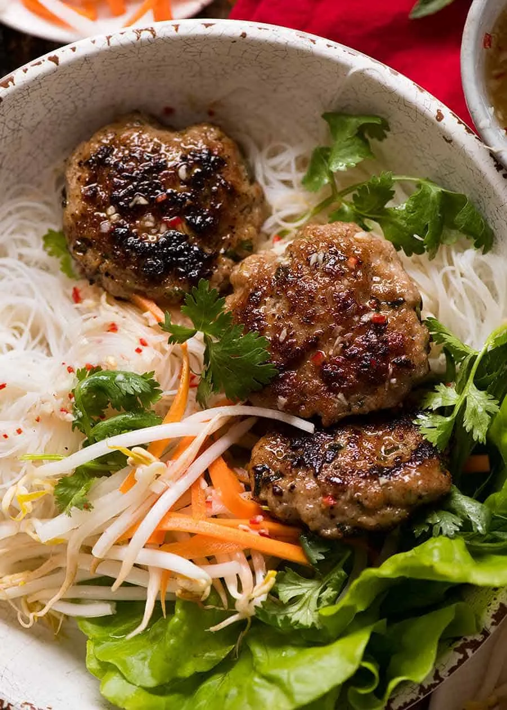

Home
Bun Cha

Description
Bun Cha is a northern Vietnamese specialty, especially popular in Hanoi.
It features grilled pork patties and pork belly slices served over
vermicelli rice noodles, accompanied by a tangy-sweet fish sauce broth,
fresh herbs, and pickled vegetables.
Ingredients
- Ground pork for patties
- Thinly sliced pork belly
- Marinade (fish sauce, sugar, garlic, shallots, black pepper)
- Vermicelli rice noodles
- Fresh herbs (lettuce, mint, perilla, cilantro)
- Pickled carrots and green papaya (optional)
- Nuoc cham dipping sauce (fish sauce, lime juice, sugar, chili)
Steps
-
Marinate the ground pork (form into small patties) and sliced pork belly
with fish sauce, sugar, garlic, and black pepper.
- Grill or broil the patties and pork belly until nicely charred.
-
Boil the vermicelli noodles according to package instructions, then drain.
-
Prepare the nuoc cham sauce by mixing fish sauce, lime juice, sugar, and
chopped chili until balanced in flavor.
-
Arrange the grilled meats, noodles, and fresh herbs on a plate. Serve with
the sauce and pickled vegetables on the side for dipping or pouring over
the noodles.